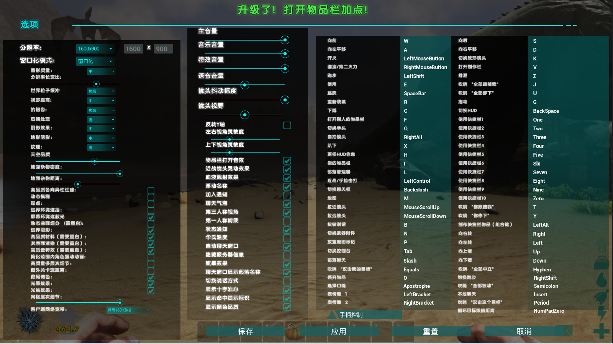

基本操作
玩家可以通过游戏设置来进入自定义按键界面，在这里选择自己的游戏参数或者更改游戏快捷键来使自己获得更好的游戏体验。

移动：wsad
攻击：鼠标左键
瞄准：鼠标右键
奔跑：左shift
使用：e
跳跃：空格
上子弹：r
蹲伏：c
趴下：x
查找其他库存：f
切换道具：q
道具：i
部落经理：l
混战：左ctrl
切换客船：backslash
相机变焦：鼠标滚轮
对话：b
切换武器攻击：n
地图助手：p
切换轨道相机：k
工具制作列表：v
大便：z
快捷键“所有人跟着我”：j
快捷键“所有人不要动”：u
拖动尸体：g
切换HUD：Backspace
道具快捷键：1234567890
快捷键“你跟着我”：t
快捷键“你留下”：y